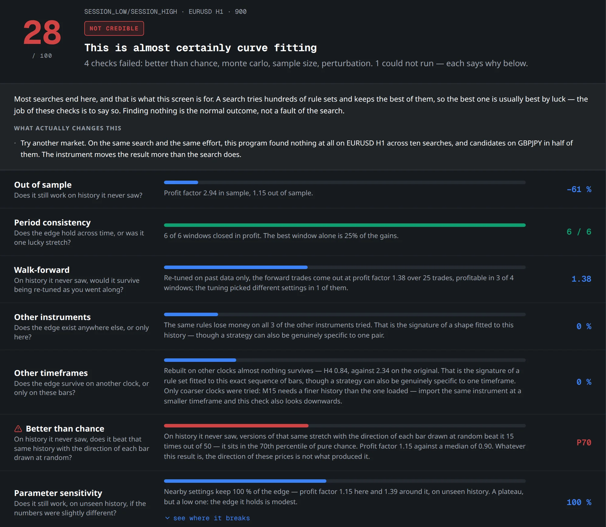

Four reasons to trust it
- Profit factor 2.94 on the history it was built on.
- Profitable in all 6 time windows, with no single window carrying it — the best one alone is a quarter of the gains.
- Walk-forward — re-tuned on past data only, as you would along the way — profit factor 1.38 over 25 forward trades, profitable in 3 of 4 windows.
- Nearby settings keep the edge, profit factor 1.39 around it: a plateau, not a lucky spike.
Honestly? Plenty of people would put money on that.
Four reasons not to
- The history it never saw. Out of sample, its profit factor drops to 1.15: 61% of the edge, gone.
- Chance. On that unseen stretch, versions of the same history with the direction of each bar drawn at random beat it 15 times out of 50. Its 1.15 sits at the 70th percentile of pure chance.
- Other instruments. The same rules lose money on all 3 other instruments tried.
- Other timeframes. Rebuilt on H4, profit factor 0.84, against 2.34 on H1.
The chart says it at a glance: the 2.94 belongs to the history the strategy was built on. Away from it, it falls to barely above what random directions produce — and on H4 it loses money. Four checks failed outright (better than chance, Monte Carlo, sample size and perturbation), one couldn't run, and the verdict was: not credible, 28 out of 100.

So why 84%?
Two reasons. The share of winning trades depends mostly on where you put the target and the stop: a close target and a distant stop win often and lose big. And this was the best of 9,660 tries. Out of thousands, the best one is usually best by luck — which is why the judge knows how many variants were tried, and asks more of the best of a thousand than of the first one you test.
The happy ending is the one where it fails
Finding nothing is the normal outcome of a search, not a failure of it. The alternative is finding out on a live account. Of the five strategies kept in that run, none came out solid: four passed as fragile, and on the stretch of history the search never saw, only two of those held up.
You can watch the same thing happen in the free demo, with your own history.
Where the numbers come from
A real run recorded for this website on 3 October 2026, on EURUSD H1. Every figure above is on the program's screen in the capture. A new run finds different strategies; the job the judge does doesn't change.